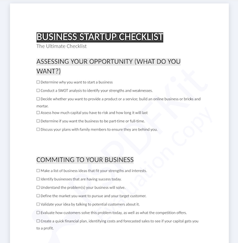
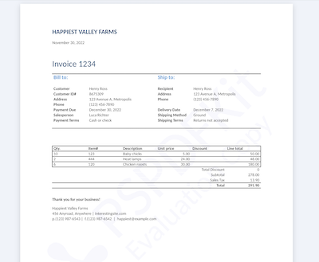
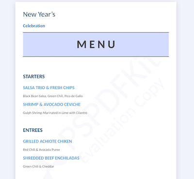
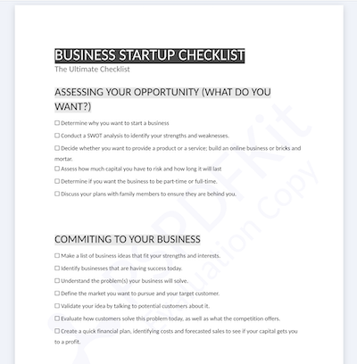
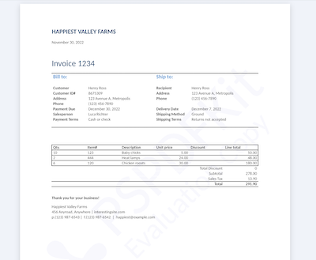
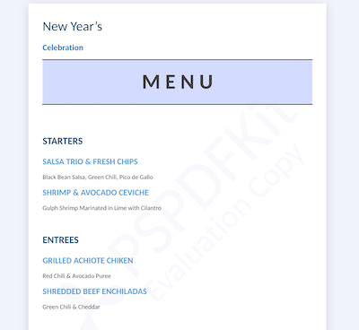

(1/5) Select Template
DEMO
Checklist

Create a checklist with predefined data.
Invoice

Create an invoice with predefined data.
Menu

Create a menu with predefined data.
CUSTOM
Upload document
Upload a DocX file with a custom template.

Create a checklist with predefined data.

Create an invoice with predefined data.

Create a menu with predefined data.
Upload a DocX file with a custom template.